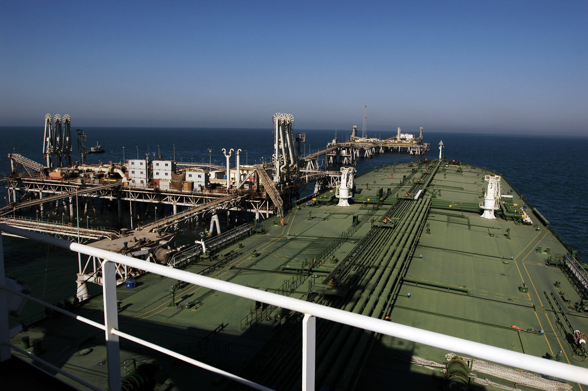

Persian Gulf
U.S. destroys five Iranian oil tankers after warship attacks; Iran fires on Jordan base as Brent tops $100
NEW · Wed. 8 a.m. EDT
U.S. Central Command said forces destroyed five IRGC-linked crude carriers on Sept. 8 — Kaviz, Charminar, Horizon 1, and Riesco in the Gulf of Oman and Derya near Kharg Island — after the IRGC twice targeted a U.S. Navy warship with ballistic missiles. The ship evaded the attacks; no U.S. personnel were harmed, and crews were told to abandon the tankers first. Iran’s IRGC claimed missile strikes on Al Azraq in Jordan and on vessels in Hormuz; Jordan said 18 of 20 projectiles were intercepted, two fell in unpopulated areas, and there were no casualties. Brent crude printed about $100.07 — the first close above $100 since July 24 — with WTI near $94.73, Reuters reported Wednesday.

An oil tanker takes on crude at a Persian Gulf terminal. File photograph; not from Tuesday’s Gulf of Oman or Kharg strikes.
U.S. Navy / Photographer’s Mate Airman Eben Boothby (public domain)
Center-left view
NPR, Al Jazeera, and BBC emphasize CENTCOM’s destruction of five tankers after warship attacks, Jordan’s intercept tally at Al Azraq, and regional escalation as oil crossed $100.
Sources: NPR · Al Jazeera · BBC
Center-right view
Reuters energy desks, WSJ market live coverage, and JNS stress Brent topping $100, IRGC targeting of a U.S. warship, and the tanker sinkings as Gulf risk priced into crude.
Sources: Reuters · Wall Street Journal · JNS